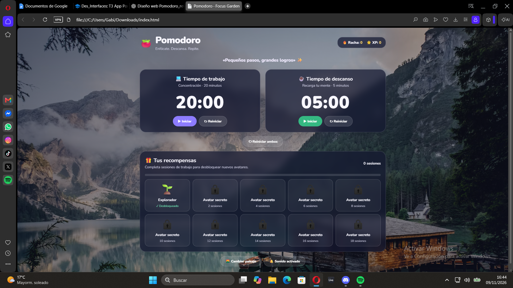
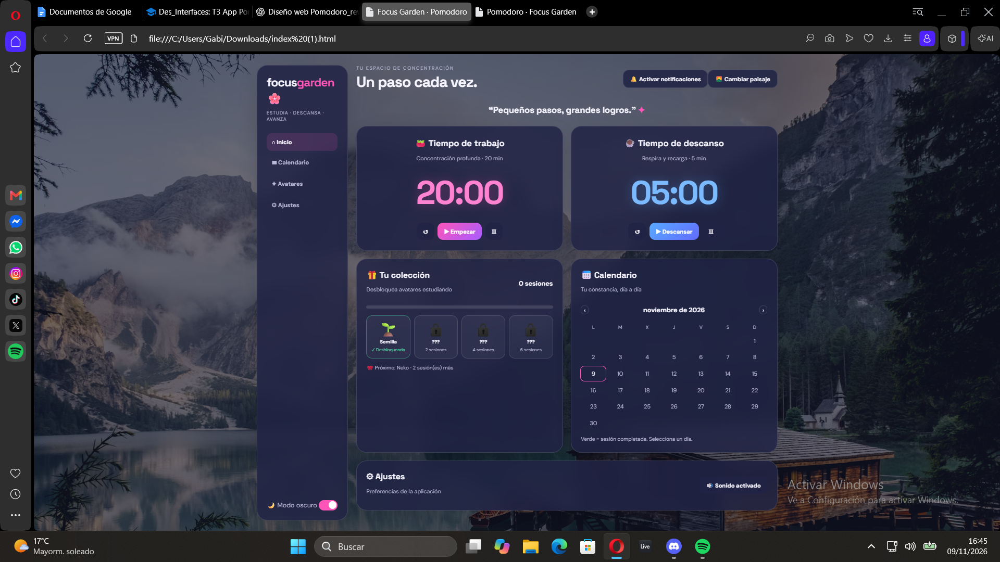

Diseño · evolución visual
Pomodoro Time
Galería de prototipos de la aplicación Pomodoro. Cada propuesta incluye el prompt original y su captura de diseño.
01
Prototipo inicial · Calm Focus
Prompt original
Diseñame una pagina web basada en el metodo pomodoro, en ella debe haber contadores para los tiempos de trabajo y tiempos de descanso(individualmente) tambien debe haber un fondo con fotos variantes que transmitan calma y un sistema de recompensas basado en que cuantos mas tiempos de trabajo completes(20 minutos) desbloquees nuevos personajes que sean tu avatar. El contador de los tiempos de descanso seran de 5 minutos

02
Prototipo visual · Anime Night
Prompt de evolución
quiero calendario de sesiones, modo oscuro claro, notificaciones de escritorio y un diseño mas llamativo y con mejores letterings basandome en el ultimo index y dame el codigo completo
